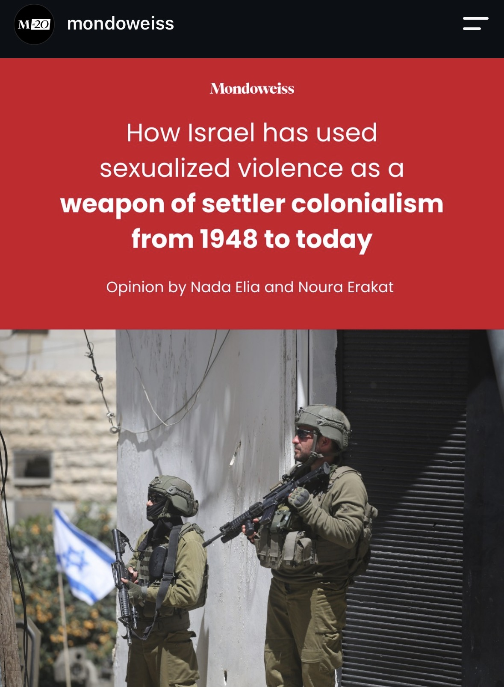

An extensive new Palestinian Feminist Collective report traces Israeli sexual violence against Palestinians from the 1948 Nakba to Gaza today, showing it isn't incidental abuse but a deliberate tool of ethnic cleansing and control. Comment 'read' to get the full piece.
Claims checked
On June 30, 2026 the Palestinian Feminist Collective released a report titled 'A Predatory State: Israeli Systemic Sexualized and Gendered Violence against Palestinians.'
The report exists and was published June 30, 2026 by the Palestinian Feminist Collective. It has a dedicated site (predatorystate.org) and was covered on release by The Intercept and Mondoweiss.
The report is roughly 200 pages and traces Israeli sexualized violence against Palestinians from 1948 to the present, covering children, women and men.
The 200-page length and 1948-to-present scope are stated by the report's authors and reflected in the report materials and coverage. The page count is confirmed only via the report/op-ed and secondary coverage, not independently paginated here.
In December 2023, former State Department official Josh Paul told CNN's Christiane Amanpour that during his tenure he learned of the rape of a 13-year-old boy by Israeli officers/interrogators while in captivity.
In a Dec 4, 2023 Amanpour interview Josh Paul described the case: DCI-Palestine brought to the State Department's attention the rape of a 13-year-old Palestinian boy in an Israeli prison in Jerusalem; the department found the allegation credible. Paul said 'Israeli officers'; reporting specifies Israeli custody/interrogation.
In response to U.S. inquiries, the Israeli Government designated Defense for Children International-Palestine — the organization that documented the abuse — a terrorist organization.
Israel designated six Palestinian NGOs, including DCI-Palestine, as terrorist organizations in October 2021, and raided/closed DCIP's offices in 2022. Josh Paul linked the designation to DCIP's reporting of the child's rape. The DCIP terror designation is documented fact; the causal framing that it was 'in response to U.S. inquiries' is Paul's account/characterization, not an established causal finding.
Multiple Palestinian testimonies of sexual violence have been documented by the UN Human Rights Office (OHCHR), the Independent International Commission of Inquiry on the Occupied Palestinian Territory, and the Israeli human rights organization B'Tselem.
OHCHR's March 2025 findings ('More than a human can bear') and the UN Commission of Inquiry's March 2025 report both document systematic sexual and gender-based violence by Israeli forces against Palestinians in detention. B'Tselem published a report (Jan 2026) documenting a pattern of sexual violence against Palestinian prisoners.
A leaked video showed five Israeli officers gang raping a Palestinian detainee in Sde Teiman prison.
A Palestinian detainee at Sde Teiman was hospitalized in July 2024 with severe injuries including a torn rectum, punctured lung and broken ribs; nine soldiers were investigated and five reservists (from 'Force 100,' not commissioned 'officers') were indicted in February 2025 for aggravated abuse including sexual assault. However, the footage broadcast on Israel's Channel 12 was later found to have been doctored/spliced, and its leak became a separate scandal. So severe sexual abuse of a detainee is documented, but the specific claim of a leaked video clearly showing 'five officers gang raping' overstates and mischaracterizes the evidence.
An Israeli court acquitted the Sde Teiman officers.
There was no court acquittal. In March 2026 the Israeli military prosecution dropped the indictment against the reservists, citing evidentiary difficulties, the detainee's release to Gaza, the investigation into the leaked/doctored footage, and concerns about the defendants' right to a fair trial. A dropped indictment before verdict is not a judicial acquittal.
Israeli society celebrated the Sde Teiman soldiers as heroes and protested their trial, including through 'right-to-rape' rallies.
Documented: in July 2024 far-right lawmakers and protesters (including Knesset members) breached Sde Teiman and another base to protest the soldiers' detention; MK Simcha Rotman called them 'heroes' and ministers defended them as doing a 'holy job.' The label 'right-to-rape rallies' is an advocacy characterization, popularized after Israeli commentators publicly argued detainees could legitimately be sodomized; it is not the protests' self-description.
The report revisits a 1949 case recorded in David Ben-Gurion's diary, in which a platoon of Israeli soldiers kidnapped a Bedouin girl in her mid-teens, cut her hair, gang raped her, and killed her; the officer in charge, Second Lieutenant Moshe, 'saw fit to remove her from the world.'
This is the documented 1949 'Nirim affair.' A teenage Bedouin girl was abducted near the Nirim outpost in August 1949, gang raped and killed by Israeli soldiers. The case was recorded in military court testimony and an entry in Ben-Gurion's diary, and exposed by Haaretz in 2003 under the headline 'I Saw Fit to Remove Her From the World.' The post's kerosene detail is an embellishment; the core account is accurate.
Interpretation (ungraded)
- That Israel has used sexualized violence as a 'weapon of settler colonialism from 1948 to today.'
- That the violence 'isn't incidental abuse but a deliberate tool of ethnic cleansing and control.'
- That the PFC report makes clear such violence 'advances the genocide of the Palestinian people.'
- That 'gendered violence is an inherent tool of settler colonialism and is not unique to Israel,' drawing a parallel to the Missing and Murdered Indigenous Women (MMIW) crisis in the United States.
- The panels are drawn from an explicitly labeled opinion piece ('Opinion by Nada Elia and Noura Erakat'); framing and conclusions are the authors' analysis, not neutral findings.
What the sources establish
The post is a Mondoweiss Instagram carousel promoting an opinion piece by Nada Elia and Noura Erakat about a real report: 'A Predatory State: Israeli Systemic Sexualized and Gendered Violence against Palestinians,' published June 30, 2026 by the Palestinian Feminist Collective. The report and its release are verifiable, and several of the post's specific factual anchors hold up against primary and strong secondary sources. Former State Department official Josh Paul did tell CNN's Christiane Amanpour in December 2023 about the documented rape of a 13-year-old Palestinian boy in Israeli custody, reported by Defense for Children International-Palestine, which Israel designated a terrorist organization (part of its October 2021 designation of six Palestinian NGOs). UN bodies corroborate the broader pattern: OHCHR and the UN Commission of Inquiry both documented systematic sexual and gender-based violence against Palestinian detainees in March 2025, as did B'Tselem. The 1949 'Nirim affair' recounted in the final panels is a genuine historical case, recorded in Ben-Gurion's diary and exposed by Haaretz in 2003.
Two claims require correction. The Sde Teiman case is real and serious — a detainee was hospitalized in July 2024 with a torn rectum and other grave injuries, and five reservists were indicted in February 2025 — but the post's account overstates the evidence and misstates the outcome. The video broadcast on Israel's Channel 12 was found to have been doctored/spliced, and the men were reservists rather than commissioned officers. Crucially, no court acquitted them: the military prosecution dropped the indictment in March 2026 over evidentiary problems, the detainee's transfer to Gaza, and the leak scandal. The 'celebrated as heroes' element is accurate — far-right lawmakers stormed the base and defended the soldiers — but 'right-to-rape rallies' is an advocacy characterization, not a neutral label.
The post's overarching framing — that this violence is a deliberate, systemic 'weapon of settler colonialism' and 'advances genocide' — is the authors' interpretation from an explicitly labeled opinion piece, not a graded factual finding. Overall, the post rests on a real report and largely accurate documented incidents, with one contradicted claim (the 'acquittal') and one overstated claim (the Sde Teiman 'gang rape video').
Sources
- Primary A Predatory State | Palestinian Feminist Collective Report
- Primary Palestinian Feminist Collective
- Primary 'More than a human can bear': Israel's systematic use of sexual and gender-based violence — OHCHR
- Primary Report of the Commission of Inquiry: Israel's systematic use of sexual and gender-based violence since 7 October 2023 — UN
- Secondary How to Show That Israel's Sexual Violence Against Palestinians Is Systemic — The Intercept
- Secondary Israel shut down NGO for reporting rape of teenager, ex-US official says — Middle East Eye
- Secondary Palestinian Child Rights Group Shutters After Israeli Pressure — Truthout
- Secondary Israeli military indicts 5 reservists accused of sexual, physical abuse of Palestinian detainee — CBC
- Secondary Israel drops charges against soldiers in Palestinian detainee abuse case — Al Jazeera
- Secondary IDF drops charges against five reservists over Sde Teiman abuse claims — The Jewish Chronicle
- Secondary Sde Teiman: Lawmakers breach Israeli detention base protesting abuse probe — CNN
- Secondary 'I Saw Fit to Remove Her From the World' — Haaretz
- Secondary Nirim affair — Wikipedia
- Secondary B'Tselem Report: Testimonies Describe 'Pattern of Sexual Violence' Against Palestinian Prisoners — Haaretz
Share this
Mondoweiss promotes a real June 2026 Palestinian Feminist Collective report ('A Predatory State') alleging systemic Israeli sexual violence against Palestinians since 1948. Most factual anchors — Josh Paul's 2023 CNN account, the DCIP terror designation, OHCHR/UN Commission of Inquiry and B'Tselem findings, and the 1949 Nirim affair — check out. But the post is wrong that a court 'acquitted' the Sde Teiman soldiers (the military prosecution dropped the charges in March 2026, and the broadcast video was found doctored), and it overstates the 'gang rape video.'
Checked against primary sources
CALL AND RESPONSE
Checked against primary sources where available. Researched with AI, reviewed by a human editor.